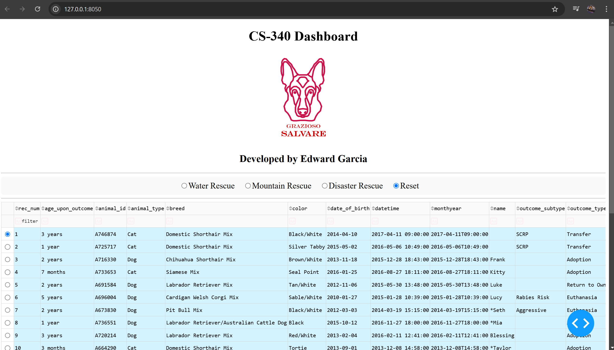
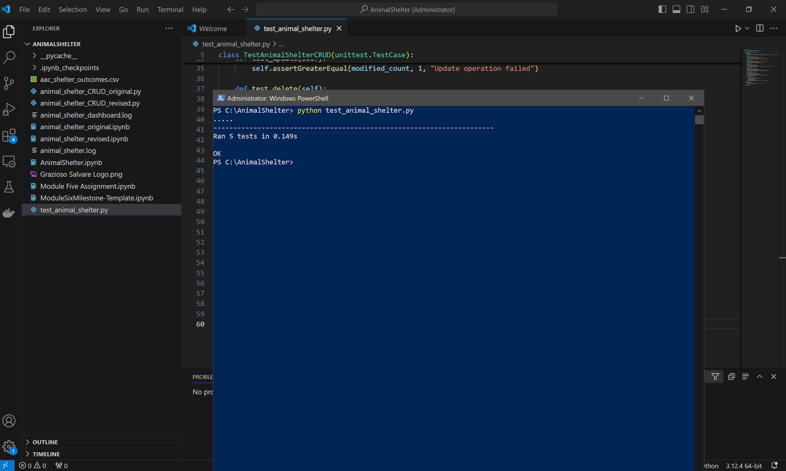
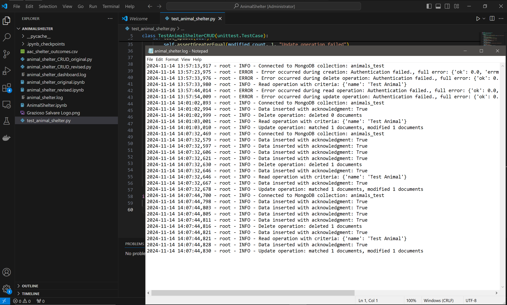
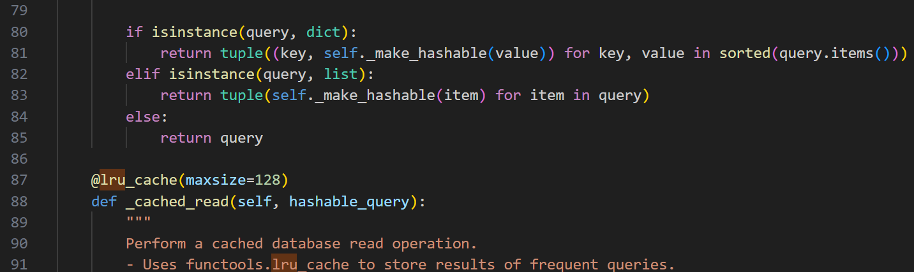
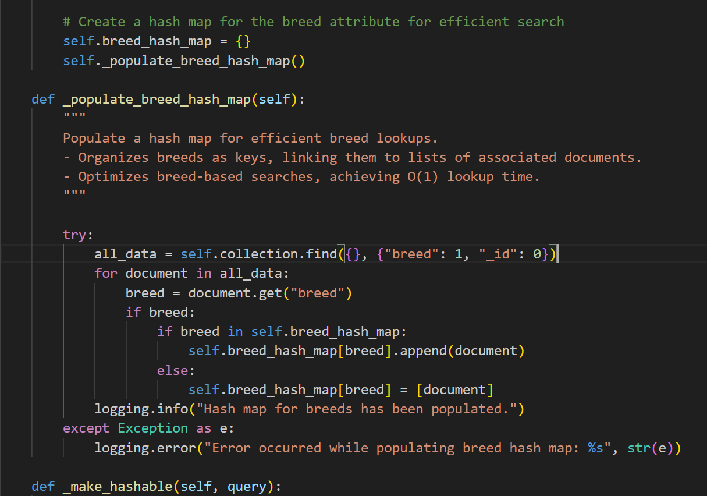
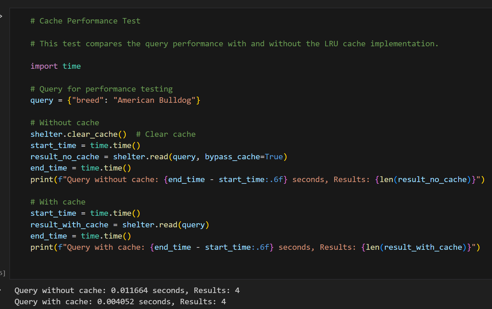
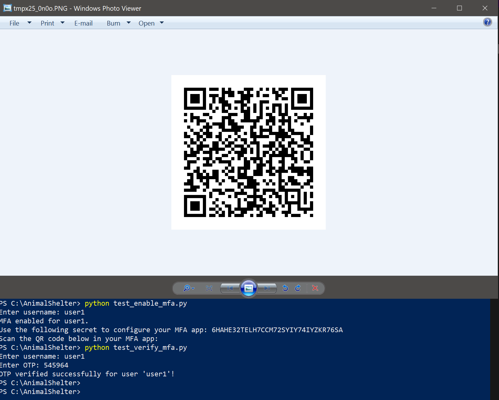
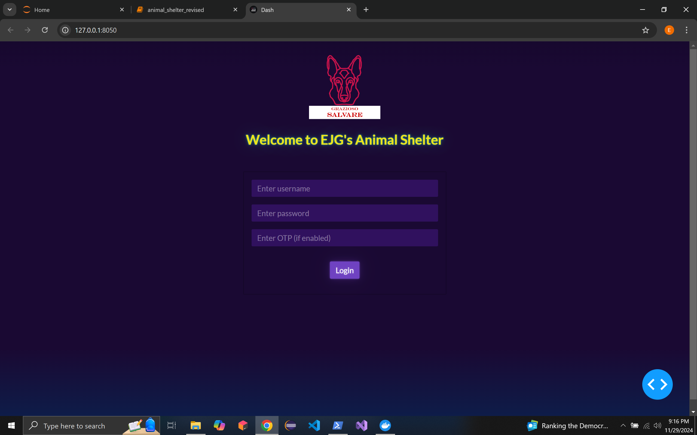
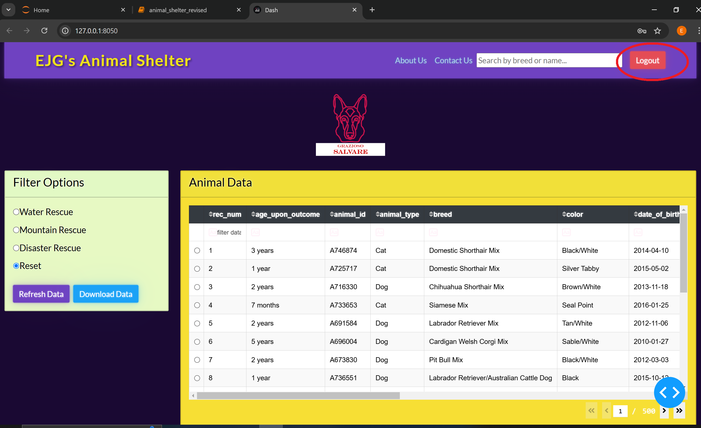

📝 Professional Self-Assessment
As a dedicated computer science student at SNHU, I have developed the technical expertise, problem-solving skills, and professionalism necessary to excel in the field of computer science. Throughout my academic journey, I have honed my abilities in software design, data structures and algorithms, database management, and security, while demonstrating strong collaboration and communication skills. The capstone project, along with the coursework in this program, has allowed me to showcase these strengths and prepare for meaningful contributions to the industry.
My capstone artifact, the Animal Shelter Dashboard, is a web-based application designed to manage animal rescue and adoption data using tools such as Jupyter Notebook, MongoDB, PowerShell, and Docker. The enhancements I implemented highlight my ability to solve real-world problems while aligning with the Computer Science program's five main course outcomes.
The first enhancement improved the software design and engineering features of the dashboard. Using Dash Bootstrap components, I developed a responsive interface with features such as a search bar, a "Refresh Data" button, a "Download" button to export database information, and an "About Us" section. These updates foster collaboration and align with Course Outcome 1. The improvements showcased professional-quality design, meeting Course Outcome 2. Implementing unit testing and logging further enhanced reliability and maintainability, satisfying Course Outcome 4. The data validation and error handling implementations demonstrated a strong security mindset for Course Outcome 5.
The second enhancement focused on optimizing efficiency and scalability by refining the application’s algorithms and data structures. I implemented an LRU cache, hash maps, and binary search to enhance query speeds and improve performance. By adding configurable cache sizes, I also verified scalability as the dataset grows. These updates addressed Course Outcome 3, demonstrating my ability to design and evaluate solutions for efficiency challenges. Performance benchmarking and thorough documentation aligned with Course Outcome 4 and Course Outcome 2, emphasizing sound methodologies and effective communication.
The third enhancement strengthened database security by introducing advanced authentication mechanisms, including user authentication, multi-factor authentication (MFA), and role-based access control (RBAC). I created a login page with fields for username, password, MFA OTP, and added a logout button for secure session management. These enhancements mitigated vulnerabilities using bcrypt password hashing and QR code-based MFA, directly addressing Course Outcome 5. The improvements also fostered a secure and user-friendly environment, supporting Course Outcome 1, while detailed documentation and the use of modern tools highlighted Course Outcome 2 and for Course Outcome 4.
Through the capstone project and my coursework, I have gained valuable experience in collaborating within team environments, communicating technical solutions to diverse audiences, and addressing complex challenges in software design, database management, and security. Each enhancement required me to brainstorm and plan carefully while making sure to apply rigorous testing, and iterative refinements, allowing me to overcome challenges such as cache configuration, live database synchronization, and role-specific permissions.
📺 My Code Review Video
Click this link: Or click on the video thumbnail below to watch the video.
📜 My Artifact:
I chose the CS340 Client/Server Animal Shelter applicaton as my artifact because it exemplifies my ability to design and implement a functional database-driven application. This project involved creating a CRUD (Create, Read, Update, Delete) system to manage data for an animal shelter, highlighting essential skills in database management, Python programming, and user interface design. For my enhancements I used tools such as Jupyter Notebook with Dash, PowerShell, MongoDB, Python, HTML, CSS, JavaScript, and Docker. I plan to improve its software design and engineering by implementing modular components and give the user interface a complete overhaul. In terms of data structures and algorithms, my goal is to introduce more efficient data filtering and search functionalities. I will also enhance the database by integrating advanced queries, improving data security through encryption, and introducing role-based access controls to align with industry standards. These improvements will demonstrate my growth in applying computer science principles to solve real-world problems effectively. The application will also be ran within a Docker container which will provide a consistent and isolated environment for data analysis and computational research.
👨💻 My Enhancements:
-
💾 Enhancement 1: Software Design & Engineering
Click here to access my Enhancement 1 filesFor Enhancement 1, I focused on improving software design and engineering to create a modern, user-friendly, and maintainable application. I updated the UI with Dash Bootstrap components and a custom theme, providing a responsive and intuitive interface. Key additions include enhanced search functionalities, a "Refresh Data" button, a download button for exporting database information, and "About Us" and "Contact Us" sections to improve navigation and usability.
To ensure software reliability, I implemented comprehensive unit testing in a new
test_animal_shelter.pyfile to verify CRUD operations and cover edge cases like invalid inputs. I added detailed logging to track user actions and simplify troubleshooting. Based on my professor's feedback, I incorporated integration testing for UI components to validate interface behavior and added performance monitoring metrics in the logging system to track efficiency and identify bottlenecks.These updates align with key course outcomes. By developing an intuitive and accessible user interface, I fostered collaboration and met Course Outcome 1. The enhancements showcase professional-quality design and clear communication, satisfying Course Outcome 2. Implementing unit testing, logging, and monitoring highlights my ability to deliver maintainable and reliable solutions, aligning with Course Outcome 4. Incorporating data validation and error handling reflects a strong security mindset, addressing Course Outcome 5.
Throughout this process, I learned the importance of user-focused design, rigorous testing, and iterative development to seamlessly integrate new features without introducing bugs. Incorporating feedback and overcoming challenges strengthened my skills in feature development, usability, and software maintainability, preparing me to deliver secure, scalable, and professional solutions.
This screenshot shows my application in its original form

This screenshot shows my application enhanced with the added UI enhancements
This screenshot shows the unit testing I implemented within the application.
This screenshot shows logging implemented within the application.
📈 Enhancement 2: Data Structures and Algorithms
Click here to access my Enhancement 2 filesFor Enhancement 2, I focused on improving system performance and scalability by integrating advanced algorithms and data structures. My enhancements included implementing LRU caching to speed up repeated queries, using a hash map for breed-based lookups to achieve O(1) time complexity, and applying binary search for sorted attributes like age and animal type, achieving O(log n) efficiency. These changes significantly improved query speeds and overall application performance.
Based on my professor's feedback, I also added cache configuration based on dataset size to dynamically optimize memory usage. This enhancement guarantees efficient caching performance as the database scales, balancing speed and memory overhead.
These updates align with key course outcomes. By addressing scalability and efficiency challenges through algorithmic principles, I demonstrated my ability to design and evaluate optimized solutions, meeting Course Outcome 3. My structured documentation and performance benchmarks reflect professional-quality communication, satisfying Course Outcome 2. Using tools like Python's
functools.lru_cacheand hash maps highlights my ability to implement scalable, well-founded solutions, aligning with Course Outcome 4. Incorporating data validation and error handling showcases a strong security mindset for Course Outcome 5.Throughout this process, I learned the importance of balancing performance improvements with memory overhead while verifying synchronization between data structures and real-time database operations. Overcoming challenges such as safely benchmarking enhancements without altering the database strengthened my problem-solving skills and testing strategies.
This screenshot shows the LRU Cache implemented within the application.
This screenshot shows the hashmap being implemented within the application.
This screenshot shows the LRU Cache being tested based on performance within the application.
📦 Enhancement 3: Databases
Click here to access my Enhancement 3 filesFor Enhancement 3, I focused on improving the application's database security by implementing user authentication, multi-factor authentication (MFA), and role-based access control (RBAC). These updates demonstrate my expertise in MongoDB, Python, and secure UI design, making sure the application remains functional, secure, and user-friendly.
To secure the database, I created a "users" collection in MongoDB with bcrypt-hashed passwords, user roles (guest, regular user, or admin), and optional MFA secrets. I implemented QR code-based MFA to allow users to configure authentication apps such as Microsoft Authenticator, and RBAC to restrict access based on user roles. To demonstrate functionality, I created sample users with varying roles and MFA configurations.
On the frontend, I developed a login page with fields for username, password, and MFA OTP, and added a logout button for secure session termination. On the backend, I implemented Python methods to handle user creation, authentication, MFA verification, and role validation. I also enhanced the logging system to track events such as login attempts, role validation, and MFA usage, improving monitoring and troubleshooting.
These enhancements align with key course outcomes. By mitigating vulnerabilities with bcrypt password hashing and QR code-based MFA, I directly addressed Course Outcome 5. The secure and user-friendly environment fostered by these updates aligns with Course Outcome 1, while the use of detailed documentation and modern tools highlights Course Outcome 2 and Course Outcome 4.
Throughout this process, I learned the importance of balancing security and usability, confirming that MFA and RBAC provided robust protection without overcomplicating the user experience. These enhancements showcase my ability to address real-world challenges with innovative, secure solutions. You can view a video of me explaining my Enhancement 3 updates below or by clicking here.
This screenshot shows the QR code function working within the application.
This screenshot shows the new login page I designed.
This screenshot shows the new logout button I added to the app layout so the user is able to logout effieciently.
📺 My Enhancement Three Review Video
Click this link: Or click on the video thumbnail below to watch my enhancement 3 video.